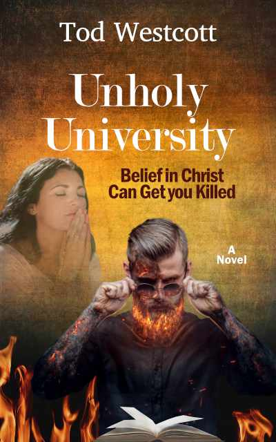
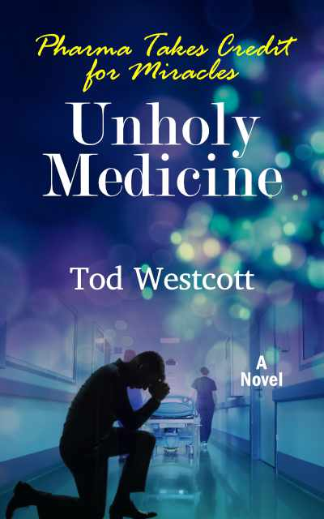

When Jesus showed a biology professor the truth of creation, he thought his class would embrace
the revelation. Satan's violent retaliation blindsided him.
As an atheist, Professor Ryan Wood didn't recognize how far the modern University had fallen. He blended right
in, leading the charge to banish the truth of Jesus from students’ minds. But Jesus appeared to him, and
he saw the wounds his dark world-view inflicted on innocent souls. He resolved to
restore truth to his class. And he
found a surprise ally in Elizabeth Williams, a courageous, believing student. But by accepting her support,
he exposed her to a system that would resort to murder to preserve its power hold.

A prominent oncologist supervised a chemo protocol that cost $500,000. Then he discovered
the treatment was a fraud.
Dr. Timothy Carrol had it all. A star oncologist on track for a million dollar salary. A loving wife who
resembled Marilyn Monroe. A fleet of expensive cars in his five bay garage. And the administrator of a
new chemo cocktail resulting in cures. Then his statistics showed a praying nurse, not the chemo, caused the
remissions. When he tried to correct the record, big medicine struck against him to conceal the
truth. He lost everything. His sole possession was hope that Jesus had a plan.